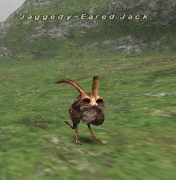

Level 75 reference · Zenith rules
|
Job: Thief Notorious Monster |
 |

|
Zone |
Level |
Drops |
Steal |
Spawns |
Notes | ||||||
|
9-10 |
|
1 |
L, S, Sc | ||||||||
|
1 |
L, S, Sc | |||||||||
|
HP = Detects Low HP; M = Detects Magic; Sc = Follows by Scent; T(S) = True-sight; T(H) = True-hearing JA = Detects job abilities; WS = Detects weaponskills; Z(D) = Asleep in Daytime; Z(N) = Asleep at Nighttime | |||||||||||

Notes (West Ronfaure):
- Located around G-9, H-9
- Lottery Spawn of Forest Hare, minimum of 50 minute wait, if all 3 hares are continually killed.
- Place Holder is the 3rd Forest Hare of three in the widescan, seen above a Carrion Worm found in the spawn area. The hare can spawn in G-10 and H-10 as well, which could be responsble for percieved long Jaggedy-Ear Jack spawn times.
- Killable by 1 level 12 player
- Rabbit Charm appears to be a very rare drop, estimated 1-5% drop rate.
- Forest Hare repop time is 5 minutes.
Notes (Nyzul Isle):
- Appears in the following Assault mission: Nyzul Isle Investigation.
Adapted from Eden Wiki: Jaggedy-Eared Jack · Contributors and history · CC BY-SA 4.0. Revision 44641. Layout, links and optional background text adapted for Zenith.